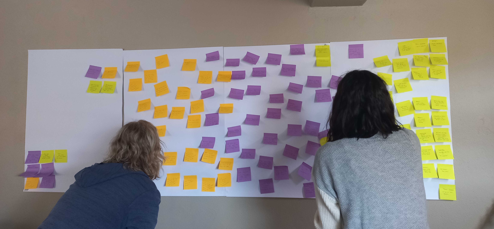
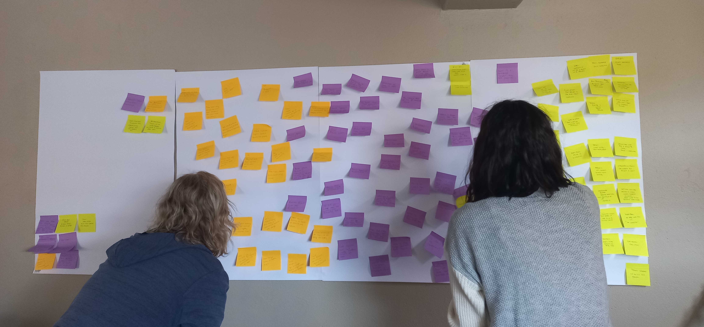

Review of the Airline Flight Booking Journey
Project type:
Desktop, Diploma Assignment
Project date:
November 2022 - April 2023
Tools Used:

Role:
Researcher, UX Designer
Desktop, Diploma Assignment
November 2022 - April 2023
Researcher, UX Designer
The goal of this project was to review the online booking process for various websites and use this information to
benefit users. I would also have the opportunity to complete my first case study.
Our Affinity workshop came together to find common challenges faced by users, it appeared that the areas that highlighted was with regards to instructions on the flight selection step, misunderstanding the total cart amount displayed, and alleviating the misconception that airlines push additional benefits onto consumers, I chose to focus on this area in particular.
 



A Customer Journey Map and user flow diagram provided clarity on which steps users found most challenging. The step for additional benefits appeared to be the step that my users found to be bothersome and users mentioned it felt like they were seeing pages or steps that they did not want to view. Users who were simply looking to book a flight had to go through these additional steps on the 3 websites I reviewed, either via a new window or a window that users had to scroll down to the bottom of the page to continue onto the payment page.
Hover to zoom

I started sketching a rough interaction design for desktop booking process and finding ways to make this process
a better experience for a users. My solution for users who wished to proceed to payments without being upsold
feautures,
was simply to click a button to allow users to skip pages with additional benefits and proceed straight to the
checkout page, where, the only feature that is shown in insurance, categorizing this more as a need to have than a
benefit.
Hover to zoom